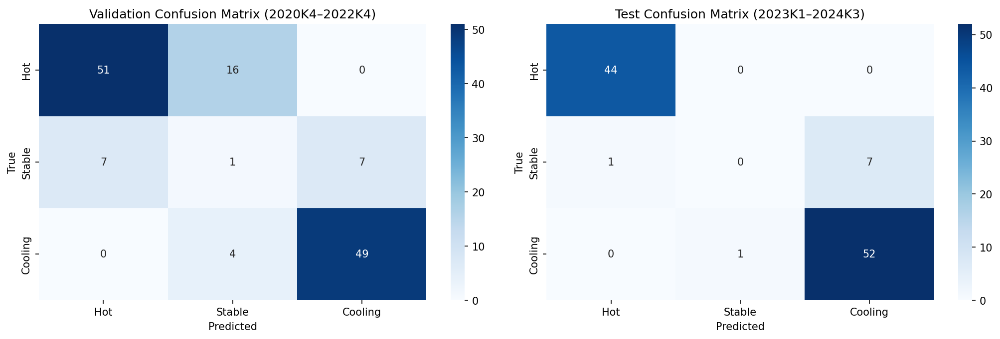
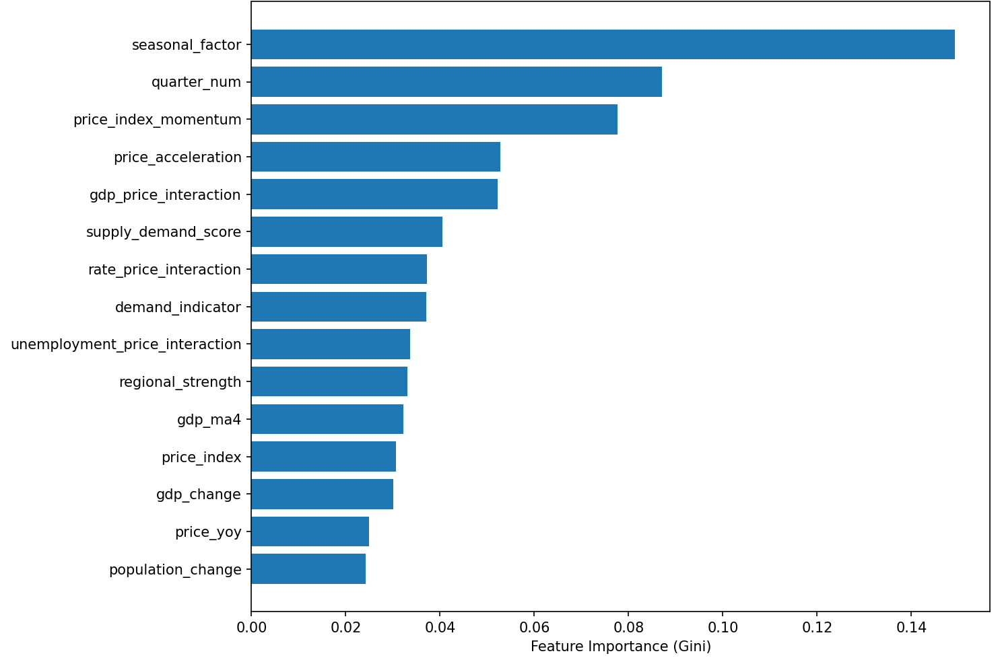

Housing Market Classifier
Predicts where the Norwegian housing market is heading next quarter. For each of Norway's 15 counties, it labels the coming quarter as Hot, Stable or Cooling, using macroeconomic data from Statistics Norway (SSB). The short version of the result: the model does not beat a simple seasonal baseline.
Earlier versions of this project reported 86.5% test accuracy. That number came from a train/test split that leaked, and it has been retracted. See The leakage bug below.
The test set is 7 quarters the model never saw during training (2023K1 to 2024K3). Only the model with the best validation score is evaluated on the test set, so Gradient Boosting has no test score.
| Model / baseline | Val macro-F1 | Test macro-F1 | Test accuracy |
|---|---|---|---|
| Majority class | 0.221 | 0.197 | 41.9% |
| Persistence | 0.322 | 0.357 | 44.8% |
| Seasonal lookup | 0.627 | 0.642 | 92.4% |
| Random Forest | 0.590 | 0.639 | 91.4% |
| Gradient Boosting | 0.508 | n/a | n/a |
The Random Forest scores 0.003 macro-F1 below the seasonal lookup on the test set. A lookup table that only knows "which quarter of the year is it" matches the full model.
This is the honest result, and also the most interesting one. Norwegian house prices follow a strong yearly cycle: in the training window, 83% of Q1s are Hot and 77% of Q3s are Cooling. Since the label is next quarter's raw price change sorted into three bins, the calendar almost decides the answer by itself.
An ablation backs this up. Removing seasonal_factor and quarter_num drops the
Random Forest to 0.555 test macro-F1. Nearly all of its apparent skill comes from seasonality, and the
macroeconomic series add nothing on top of the calendar.
Random Forest on the test set:
| Class | Precision | Recall | F1 | Support |
|---|---|---|---|---|
| Hot | 0.98 | 1.00 | 0.99 | 44 |
| Stable | 0.00 | 0.00 | 0.00 | 8 |
| Cooling | 0.88 | 0.98 | 0.93 | 53 |
The 91.4% accuracy looks better than it is. The model never predicts Stable, and Stable is only 8 of the 105 test rows, so missing all of them barely moves accuracy. Macro-F1 is the number to look at.

Chronological split. On the test quarters, Hot and Cooling are almost always right, while 7 of the 8 Stable quarters are predicted as Cooling.

The two most important features are seasonal_factor and quarter_num:
the same finding, showing up in the importances.
The original evaluation was wrong, and fixing it changed the conclusion of the project.
create_labels returned its data sorted by region and quarter, and train_model.py
then took the first 65% of rows as training data under a comment that said "Time-based split".
Since the rows were sorted by county name first, the data was actually split alphabetically by county, not by time.
| Old (broken) split | New split | |
|---|---|---|
| Train | Agder to Telemark, all years | 2014K1 to 2020K3 |
| Validation | Troms, Trøndelag, most of Vestfold | 2020K4 to 2022K4 |
| Test | Rest of Vestfold, Vestland, Østfold | 2023K1 to 2024K3 |
This leaked information in two ways:
- Shared labels. The 15 counties map to only 10 SSB price regions. Buskerud, Telemark, Vestfold and Østfold share one price series, so their labels are identical every quarter. Most of the old test set had the same answer as a row the model had already trained on for that quarter.
- The same quarters in train and test. All 79 quarters showed up in both sets. National series like CPI, the policy rate and GDP are unique per quarter, so together they work like a timestamp. The model could learn "2016K2 was Hot" from one county and reuse it for another.
The fix assigns whole quarters to each set, so the model is only scored on quarters it has never seen.
Two related bugs were fixed at the same time: several .diff() and .rolling() features
are now grouped by region, and z-scored features now use per-region expanding statistics that only look at the past.
Each county-quarter is labelled by the price change in the next quarter. Features only use current and past data.
| Label | Next-quarter price change |
|---|---|
| Hot | above +2.0% |
| Stable | between −0.5% and +2.0% |
| Cooling | below −0.5% |
Compared against three baselines: majority class, persistence (repeat last quarter's label) and seasonal lookup (predict from the quarter of the year only).
Norway redrew its county map in 2020 and 2024. The parser maps everything onto one consistent set of 15 modern counties, so each series means the same thing across the whole period.
| SSB table | What it measures | Frequency | Coverage |
|---|---|---|---|
| 03013 | Consumer price index (CPI) | Monthly | 2005-2025 |
| 10701 | Norges Bank policy rate | Monthly | 2014-2026 |
| 01222 | Population change by county | Quarterly | 2005-2024 |
| 07221 | House price index by region | Quarterly | 2005-2024 |
| 10187 | Property sales volume | Quarterly | 2008-2024 |
| 13760 | Unemployment rate | Monthly | 2006-2026 |
| 03723 | Building starts by county | Monthly | 2005-2026 |
| 10748 | Mortgage interest rates | Monthly | 2014-2025 |
| 09171 | GDP volume change | Quarterly | 2005-2025 |
| 06944 | Household income by county | Annual | 2005-2023 |
- 15 counties, but only 10 price series. Several counties share a price series and therefore identical labels, so the effective sample is smaller than 645 rows suggests.
- Only 2014 onward by default. The policy and mortgage rate series start in 2014. Missing values are now imputed with medians fitted on the training window only, instead of filled with zeros.
- Household income is dropped. SSB has no data for 7 of the 15 counties, so it is removed by the coverage rule.
- Small test set. 7 quarters and 105 rows, with only 8 Stable rows. The Stable scores are indicative at best.
As the task is defined now, it is close to a seasonal lookup, which leaves the model very little room to show real skill. The most useful change would be a harder and more meaningful target: label on seasonally adjusted or year-over-year price changes instead of raw quarter-on-quarter changes.
That removes the yearly cycle from the target, so the macroeconomic features would have to carry actual signal. Since it changes what the project claims to predict, it is left as explicit future work.
- Python
- scikit-learn
- pandas
- NumPy
- Matplotlib
- Seaborn
- SSB API
It started as a Random Forest written from scratch to learn how it works: Gini impurity, bootstrap sampling, random feature subsets and majority voting. Trained on 80 hand-downloaded samples, it reached 67% validation accuracy and could not predict Stable at all. The automated SSB pipeline expanded the data to all 15 counties, and the project moved to scikit-learn's ensemble classifiers.
Claude Opus 4.6 was used as a development tool throughout the project.